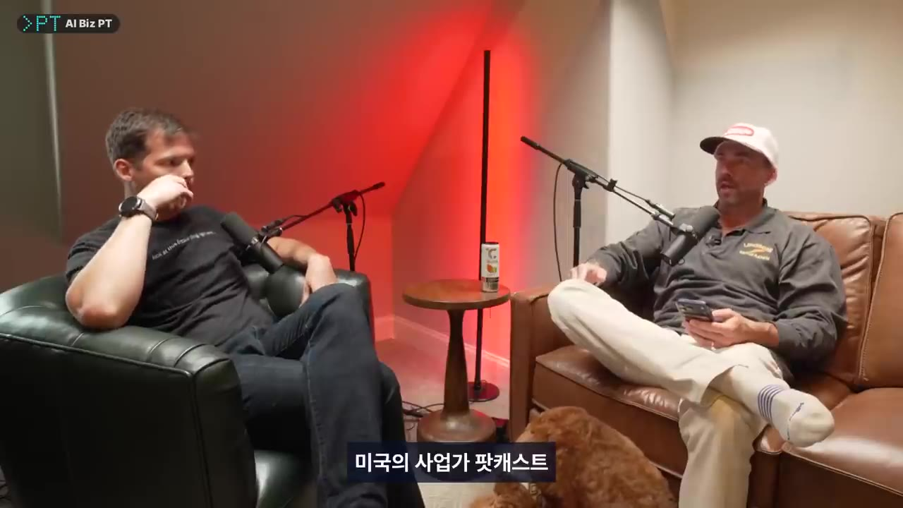
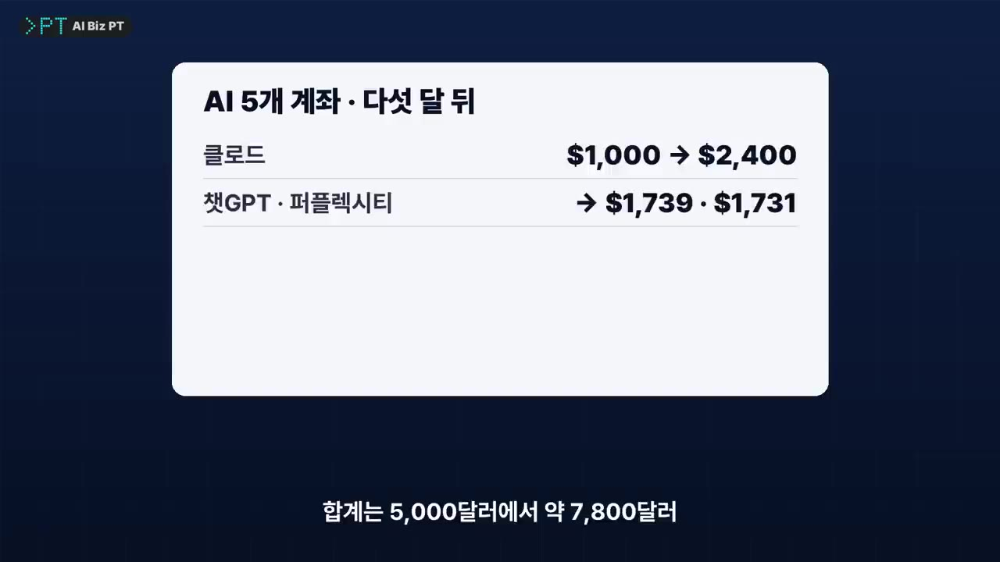

클로드 vs 챗GPT vs 제미나이, AI 5개에 진짜 돈 700만 원을 맡겼더니 생긴 일
🎙️ 자막 대신 영상 음성을 받아써서 정리 (ko (음성 받아쓰기·GPU))
▶ 원본 영상 보기한눈에 보기
- 미국 사업가 브랜든 도일이 클로드·챗GPT·제미나이·그록·퍼플렉시티에 1,000달러씩, 모두 5,000달러(약 700만 원)의 실제 돈을 맡기고 "지면 유료 구독을 끊겠다"는 조건을 걸었다.
- 처음엔 챗GPT와 클로드가 종목 추천을 한참 망설였고, 서로의 보유 종목을 보여 주자 1등(클로드)이 산 상품을 다른 AI들이 따라 샀다.
- 5개월 뒤 1등 클로드는 2,400달러, 꼴찌 제미나이는 445달러였다. 합계는 약 7,800달러로, 같은 기간 미국 대표지수 상승률(약 5%)을 크게 넘었다(본인 발표 기준).
- 다만 수익 대부분은 3배 레버리지 상품에서 나왔다. 수치는 휴대폰 화면으로만 보여 준 것이고, 실험도 아직 끝나지 않았다.
- 영상이 꼽은 교훈: AI는 내가 건 규칙대로 움직이고, 서로 답을 보여 주면 베끼며, 결과보다 꾸준한 기록이 남는다.
이런 분께 도움이 됩니다
- 여러 AI를 업무에 같이 쓰면서 답을 비교하거나 검증하고 싶은 직장인
- AI에게 주는 조건(프롬프트·평가 기준)이 결과를 어떻게 바꾸는지 사례로 보고 싶은 분
핵심 내용
실험 설계: 5개 계좌와 '구독 해지' 조건
- 실험자는 브랜든 도일이다. 미국 사업가 팟캐스트 '크리스 커너 쇼(The Koerner Office)'에 나와 이 실험을 소개했다. (0:54)

- 2025년 말 증권 계좌 안에 포트폴리오 5개를 만들고 각각 AI 이름을 붙였다.
- 대상은 클로드, 챗GPT, 제미나이, 그록, 퍼플렉시티이고, 하나에 1,000달러씩 모두 5,000달러(약 700만 원, 1달러 1,400원 가정)를 넣었다.
- 50달러가 아니라 1,000달러를 넣은 이유는 "너무 적으면 내가 신경을 안 쓸 것 같아서"였다.
- 모델마다 고른 이유가 있었다.
- 그록은 X(옛 트위터)의 실시간 글, 제미나이는 구글 검색을 활용할 수 있다.
- 퍼플렉시티는 다른 모델들을 골라 쓰는 서비스다.
- 다섯 개 모두 월 20달러 유료 구독 중이었고, 실험자는 "나머지 넷과 경쟁이다, 지면 구독을 끊겠다"는 조건을 걸었다. (2:10)
- 왜 이렇게 압박했는지에 대한 본인 답변은 자막에 없다(자막상 불분명).
- 진행자는 "회사들이 AI를 맞장구만 치는 예스맨으로 만든 것도 결국 구독을 지키려는 것 아니냐"고 받았다.
🔁 실험이 진행된 순서
- 계좌 5개 개설
- 추천 설득
- 경쟁 조건 걸기
- 매주 토요일 결정
- 공개 규칙 변경
- 1계좌 5개 개설
2025년 말, AI 이름을 붙인 포트폴리오 5개에 1,000달러씩 넣음 (0:54)
- 2추천 설득
"진짜 돈을 넣는다"며 실제 종목 추천을 달라고 한참 설득
- 3경쟁 조건 걸기
지면 월 20달러 구독을 해지한다는 규칙 제시
- 4매주 토요일 결정
각 AI가 자기와 경쟁자 성적을 보고 팔기·사기·버티기를 정함
- 5공개 규칙 변경
베끼기가 생기자 매주는 합계 성적만, 보유 종목은 월 1회만 공개
AI들의 행동 ① 처음엔 추천을 거절했다
- 첫 장벽은 AI가 실제 종목 추천을 해 주지 않는 것이었다.
- 한 모델은 바로 응했다. 어떤 모델인지는 자막에 나오지 않는다(자막상 불분명).
- 챗GPT와 클로드는 한참을 망설였다. (1:36)
AI들의 행동 ② 1등을 따라 샀다
- 클로드가 먼저 산 상품이 크게 오르자 다른 모델들이 같은 상품을 따라 샀다. (2:32)
- 그래서 실험자는 규칙을 바꿔 보유 종목을 한 달에 한 번만 보여 주기로 했다.
- 지고 있는 쪽이 1등과 같은 종목을 사면 정의상 절대 따라잡을 수 없다는 지적도 나왔다. 같은 걸 들고 뒤에서 출발했기 때문이다. (3:33)
💡 남의 답을 보면 AI도 베끼고, 베끼면 꼴찌는 영원히 꼴찌다.
AI들의 행동 ③ 도박꾼이 된 제미나이
- 꼴찌는 제미나이였다. 작년 가을, 암호화폐 가격을 2배로 따라가는 레버리지 상품(움직임을 몇 배로 키워 따라가는 상품)에 500달러를 넣었다. (3:58)
- 하필 가격이 꼭대기일 때 샀고, 암호화폐가 떨어지자 상품 가격은 2배로 떨어졌다.
- 결국 162달러에 팔았다.
- 진행자는 이를 카지노에 비유했다. 300달러를 잃고 본전을 찾겠다고 더 걸다가 3,000달러를 잃는 사람과 같다는 것이다.
- 다른 모델들도 얌전하지 않았다. 대부분 시장 움직임을 3배로 따라가는 상품에 돈을 넣었다. (4:32)
- 3배 상품은 오를 땐 3배로 벌지만 내릴 땐 3배로 잃는다.
5개월 뒤 성적표 (본인 발표 기준)
| AI | 시작 | 5개월 뒤 | 비고 |
|---|---|---|---|
| 클로드 | 1,000달러 | 2,400달러 | 1등 |
| 챗GPT | 1,000달러 | 1,739달러 | 70% 넘게 상승 |
| 퍼플렉시티 | 1,000달러 | 1,731달러 | 70% 넘게 상승 |
| 그록 | 1,000달러 | 영상에서 언급 없음 | 합계로 역산하면 약 1,485달러 (보충) |
| 제미나이 | 1,000달러 | 445달러 | 꼴찌 |
| 합계 | 5,000달러 | 약 7,800달러 | 같은 기간 미국 대표지수 약 5% 상승 |
- 클로드가 앞선 이유 하나는 미국 정부가 지분을 산 한 반도체 회사를 일찍 고른 것이다. 실험자 말로는 그 주식이 120달러에서 560달러가 됐다. (5:28)
- 실제로 많이 산 상품은 AI 반도체 관련 상품이었다.

결과를 볼 때 주의할 점
- 실험 기간은 5개월뿐이고 아직 끝나지 않았다.
- 숫자는 본인이 휴대폰 화면으로 보여 준 것이며, 증빙은 확인되지 않았다.
- 결과 대부분은 3배 레버리지 상품이 만들었으므로 운과 시장 흐름을 크게 탔다.
💡 이 성적은 AI의 투자 실력이라기보다 레버리지와 상승장이 만든 숫자에 가깝다.
댓글이 짚은 것
- 원본 영상은 59만 회 넘게 재생됐다. 가장 공감을 많이 받은 댓글은 "말로만 하지 말고 실제 캡처와 프롬프트를 보여 줬어야 한다"는 지적이었다. (5:48)
- "AI가 AI 관련 상품에 투자하라고 한다"는 농담도 있었다.
- 가장 날카로운 댓글은 "1등만 살아남는 규칙이면 지고 있는 모델은 크게 거는 게 합리적"이라는 지적이었다.
💡 게임 이론으로 보면 제미나이의 도박은 고장이 아니라 규칙이 시킨 일이다.
일에 AI를 쓰는 사람이 가져갈 세 가지
기억할 숫자·인용
- 1,000달러 × 5개 = 5,000달러(약 700만 원) → 5개월 뒤 약 7,800달러
- 1등 클로드 2,400달러 / 챗GPT 1,739달러 / 퍼플렉시티 1,731달러 / 꼴찌 제미나이 445달러
- 제미나이: 암호화폐 2배 상품에 500달러를 넣었다가 162달러에 매도
- 클로드가 고른 반도체 주식: 120달러 → 560달러 (실험자 주장)
- 같은 기간 미국 대표지수 약 5% 상승 · 원본 영상 59만 회 이상 재생
- "1등만 살아남는 규칙이면 지고 있는 모델 입장에선 크게 거는 게 합리적이다." (댓글)
생각해볼 점
- (영상 내용) 수치는 본인 발표뿐이고 프롬프트도 공개되지 않았다. 원본 댓글이 지적했듯 어떤 질문을 했는지 모르면 'AI의 판단'인지 '질문의 결과'인지 구분하기 어렵다.
- (내 의견) 모델마다 한 계좌씩, 5개월만 돌린 실험이라 표본이 너무 작다. 레버리지 상품이 상승장과 겹친 효과를 빼면 모델 간 순위가 의미 있는지 알 수 없다. 투자 판단의 근거로 삼으면 안 된다.
- (내 의견) '지면 구독 해지'라는 압박 자체가 위험 선호를 키웠을 수 있다. 업무에서도 "무조건 이기는 답"을 요구하면 AI가 과장되거나 위험한 답을 낼 수 있다는 점은 그대로 적용해 볼 만하다.
바로 해볼 일
- 지금 쓰는 AI 두세 개에 같은 업무 질문을 각각 새 대화창에서 따로 던지고, 답을 모은 뒤 비교해 보기
- 자주 쓰는 프롬프트에 "1등만", "무조건" 같은 압박 조건이 들어가 있는지 점검하고, 빼고 다시 물어 답이 달라지는지 확인하기
- 반복해서 묻는 질문 하나를 정해 같은 문구로 주 1회 묻고, 답을 캡처해 기록하는 루틴 시작하기